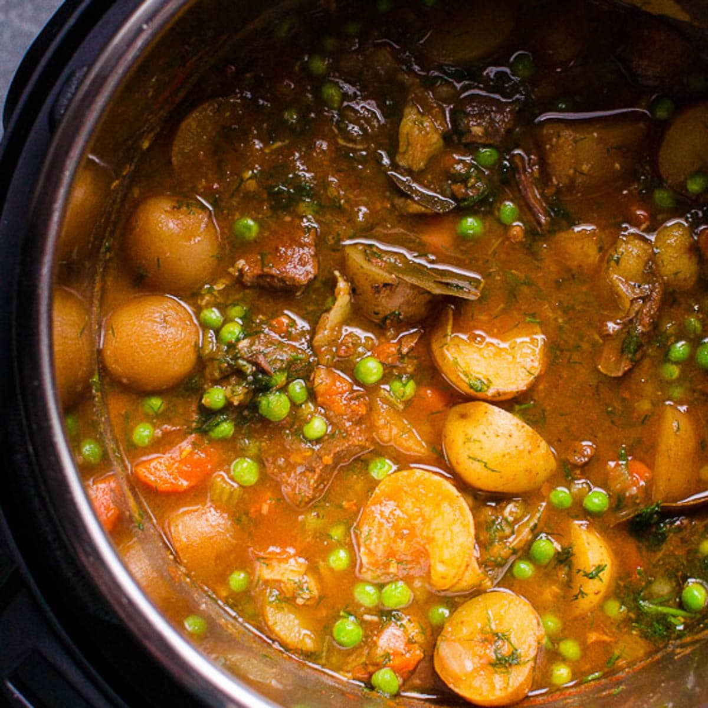

Instant Pot Beef Stew
Home

Description
This Instant Pot Beef Stew is a hearty comfort meal that's easy to make in the pressure cooker. It takes just 35 minutes to cook, and it's the perfect dinner for a cold night.
Ingredients
6 Quart Instant Pot
- 1 medium onion, chopped
- 2 large carrots, chopped
- 2 small celery stalks, chopped
- 3 large garlic cloves, grated & divided
- 2 pounds potatoes, cubed
- 1.5 pounds chuck roast, cubed into 1" pieces
- 3 ounces tomato paste, low sodium
- 2 cups beef broth, low sodium
- 1 teaspoon oregano, dried
- 1 teaspoon thyme, dried
- 3/4 teaspoon salt
- Ground black pepper, to taste
- 3 bay leaves
- 5 peppercorns
- 1 cup frozen peas
- 1/2 - 3/4 cup fresh dill, finely chopped
Instructions
- Turn the Instant Pot on and press the Sauté function key. Add the onions, carrots, celery, and 1/2 of the grated garlic. Sauté for 5 minutes, stirring occasionally.
- Add the potatoes, chuck roast, tomato paste, beef broth, oregano, thyme, salt, pepper, bay leaves, and peppercorns. Stir well.
- Close the lid and set the valve to the Sealing position. Press the Pressure Cook/Manual key and set the cooking time for 35 minutes on High pressure.
- Once the cooking time is up, allow for a 10-minute Natural Pressure Release. Then, carefully turn the valve to the Venting position to release the remaining pressure.
- Open the lid and discard the bay leaves and peppercorns. Stir in the frozen peas and the remaining grated garlic. Taste for salt and pepper.
- Serve the beef stew hot, garnished with fresh dill.